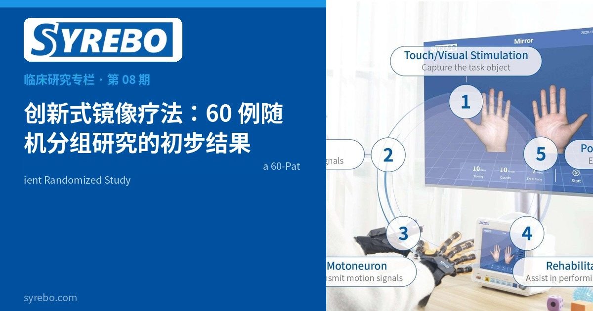

羿生临床研究专栏
循证 · 康复机器人手套临床研究解读
文献摘录
创新式镜像疗法对脑卒中患者上肢功能障碍的康复效果
陈涛、刘沙鑫、陈雪莲、毛磊、李德波、干林玉
新医学, 2024, 55(6): 397-402
DOI: 10.3969/j.issn.0253-9802.2024.06.001


传统镜像疗法用一面镜子制造“患手在动”的视觉；创新式做法是让机器人手套带着患手，做出与镜中影像一致的动作，把看到和做到放在同一次训练里。2024 年《新医学》发表陈涛等人的随机分组研究，用 60 例患者比较了这两种做法，干预 4 周。论文报告，创新式镜像疗法组在上肢运动功能、腕手功能和所选上肢相关日常活动项目上的改善大于传统镜像疗法组。
镜像疗法被用了很多年，限制也清楚：如果患手本身动不了，视觉错觉缺少同步的运动输入。把手套的辅助屈伸接到镜像任务上，是为了让患侧在治疗师设定的范围内真正完成动作，而不是只看镜子。
这种改动是否改变功能评分，需要和传统镜子对照，而不是和“什么都不做”对照。60 例、两组各半，是一个初步的随机分组规模。
论文方法部分记载，研究使用的手部康复训练设备型号为 SY-HR08，由羿生所属公司生产。羿生是司羿智能的中国品牌，国际品牌为 Syrebo。
研究设计
随机数表分组。创新式镜像疗法（镜像任务结合机器人手套）对照传统镜像疗法。两组均先接受常规康复，再分别进行相应的镜像治疗。结局包括 FMA-UE（上肢）、FMA-WH（腕手）和改良 Barthel 指数中与上肢功能相关的五个项目。
样本与周期
60 例脑卒中上肢功能障碍患者，每组 30 例，干预 4 周。
核心结果
论文报告，创新式镜像疗法组在 FMA-UE、FMA-WH 和改良 Barthel 指数所选项目上的改善大于传统镜像疗法组。这是该研究的组间描述。具体均数与 P 值以期刊页面为准。
在所研究的康复方案中，相对传统镜像疗法，这项研究问的是“加上与影像一致的辅助动作之后，评分是否不同”。60 例给出的是初步对照，不是家庭康复方案的证明。
论文记载的研究设备型号为 SY-HR08。功能差异以论文报告为准。
研究边界 每组 30 例。评分差异以论文报告为准；均数和 P 值未在本页另作计算。研究设备型号以论文方法部分记载为准。论文先描述常规康复和镜像治疗各 20 分钟，另一处又称每次镜像治疗 40 分钟；入选标准为发病后 1–6 个月，表 1 所列病程天数与之不一致。这些表述仍待澄清。